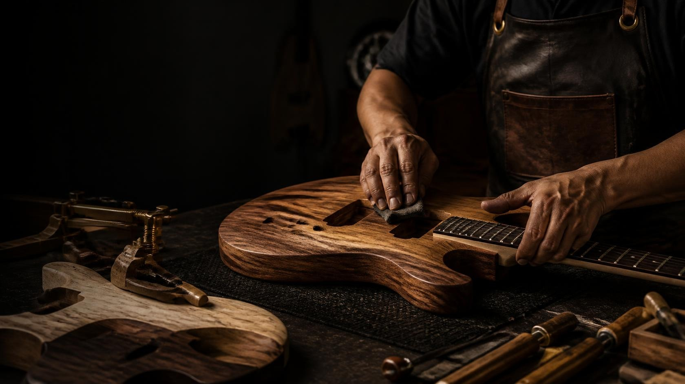
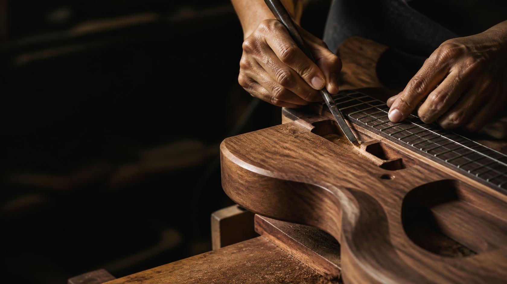
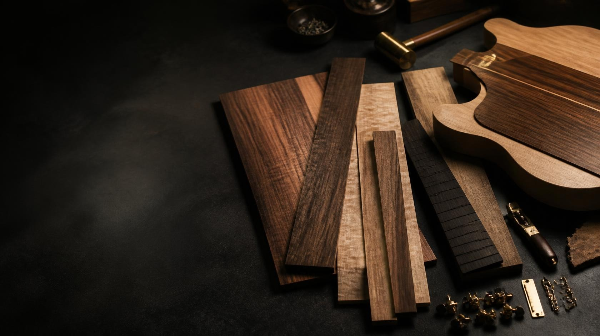
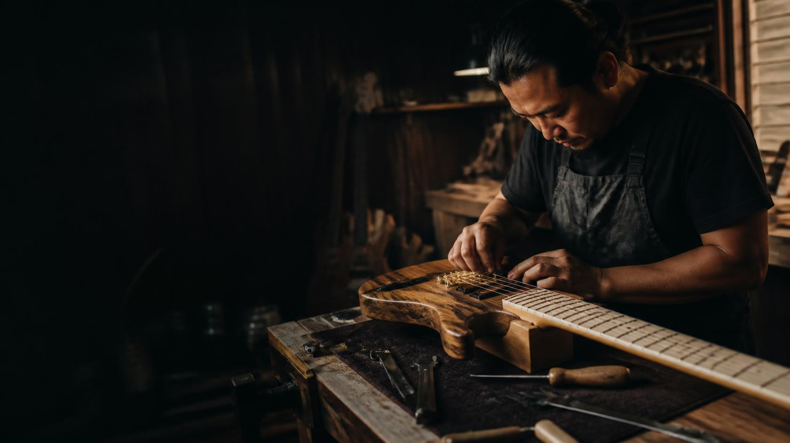

01 / Detail
DETAILS THAT MAKE THE DIFFERENCE
Clear decisions in shape, finish, and feel help the instrument disappear beneath the music.

Hiraya Musiko / Who We Are
Instruments shaped by Filipino creativity, made to meet the musician where the music begins.
Chapter 01 / Origin
Hiraya Musiko is grounded in the belief that Filipino musicians deserve instruments with warmth, purpose, and a sense of place. We draw from the country’s creative energy and shape it into instruments that invite people to play, learn, gather, and be heard.

Chapter 02 / Detail
Good instruments are felt before they are explained. Our approach values precision, patience, and the small decisions that make an instrument comfortable in the hands and expressive in the room.

Chapter 03 / Materials
Materials bring their own character. We consider how each choice contributes to an instrument’s feel, visual language, and musical personality—so the final piece feels intentional rather than simply assembled.

Chapter 04 / People
Behind every instrument are people paying attention: hands learning the material, eyes checking the finish, and makers taking the time to do the work with care. That human touch is part of the sound we want to share.
Chapter 05 / Connection
An instrument becomes yours through use: the first familiar chord, the late-night idea, the song played for someone important. Hiraya pieces are designed to feel comfortable enough for that relationship to grow.
The Hiraya approach
Our story continues in the details: thoughtful choices, responsive playability, and instruments made to stay present through the everyday work of making music.
01 / Detail
Clear decisions in shape, finish, and feel help the instrument disappear beneath the music.
02 / Intent
Useful design should feel natural: present when needed, quiet when the player is in the moment.
03 / Play
Comfort and response give musicians room to develop their own voice over time.
A living instrument
The measure of a musical instrument is the space it opens for expression. Hiraya Musiko is made for the player who is still discovering what their sound can become.
An evolving story
Not a fixed history, but a living direction—shaped by the instruments we refine and the musicians who give them meaning.
The first note
Hiraya begins with a simple idea: local creativity deserves instruments that feel considered, welcoming, and worth returning to.
A clearer voice
We shaped a collection around tone, comfort, and the many ways musicians practice, perform, and share music.
More ways to play
Guitars, keyboards, percussion, and accessories come together as a connected world for learning and performance.
Still in motion
Hiraya Musiko continues to grow through curiosity, craft, and the musicians who keep asking what is possible.
Your sound begins here
Find the piece that meets you where you are—and helps you imagine where the music can go next.
Explore the Collection